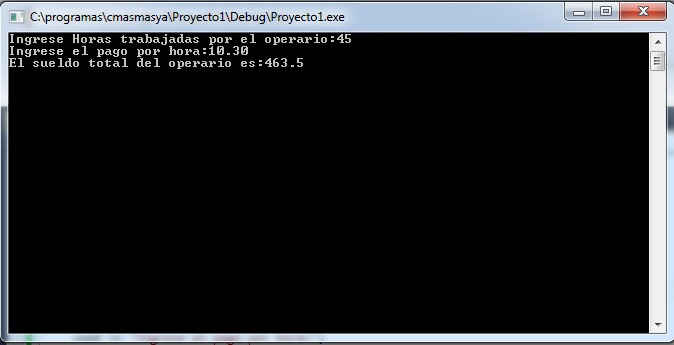
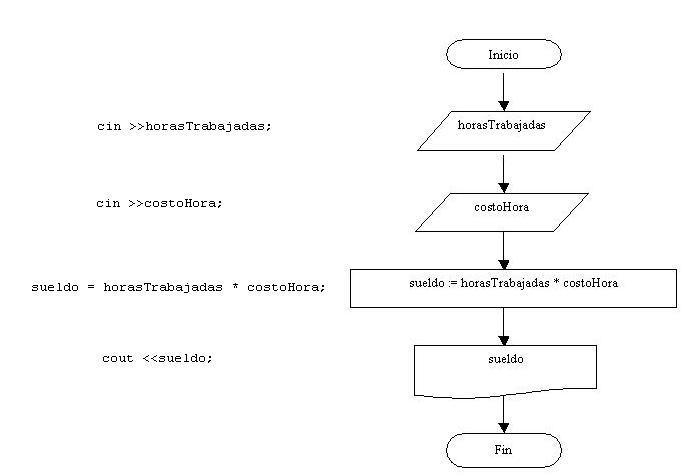

Ahora debemos codificar el diagrama de flujo utilizando las instrucciones del lenguaje C++.
A medida que avancemos en el curso veremos que significa la palabra clave include, el using namespace etc. por el momento nos centraremos donde codificaremos nuestros diagramas de flujo.
La codificación del diagrama de flujo la haremos dentro de la función main (la función main es la primera que se ejecuta al iniciarse un programa)
El programa completo para el calculo del sueldo de un operario conociendo la cantidad de horas trabajadas y el costo por hora es (copiemos estas líneas en el editor del Visual Studio Community dentro de la ventana archivo1.cpp que creamos en el concepto anterior):
#include<iostream>
using namespace std;
void main()
{
int horasTrabajadas;
float costoHora;
float sueldo;
cout <<"Ingrese Horas trabajadas por el operario:";
cin >>horasTrabajadas;
cout <<"Ingrese el pago por hora:";
cin >>costoHora;
sueldo = horasTrabajadas * costoHora;
cout <<"El sueldo total del operario es:";
cout <<sueldo;
cin.get();
cin.get();
}
Para probar el funcionamiento del programa debemos presionar el ícono con un triángulo verde (o la tecla especial F5 o desde el menú elegir la opción "Debug"->"Start Debug" (en castellano"Depurar" -> "Iniciar depuración"))
La ejecución del programa permite ingresar la cantidad de horas trabajadas por un operario y su pago por hora, mostrando seguidamente el sueldo que se debe pagar, un ejemplo de la ejecución de este programa es:
Cuando lo ejecutamos se crea el programa ejecutable "Proyecto1.exe" que es el resultado de la compilación del código fuente que escribimos en el editor.
Conceptos que deben quedar claros:
Por el momento haremos todo el algoritmo dentro de la función main.
Si observamos el diagrama de flujos vemos que debemos definir tres variables: (horasTrabajadas, costoHora, sueldo), aquí es donde debemos definir que tipos de datos se almacenarán en las mismas. La cantidad de horas normalmente será un valor entero (ej. 100 - 150 - 230 etc.), pero el costo de la hora es muy común que sea un valor real (ej. 5.35 - 7.50 etc.) y como el sueldo resulta de multiplicar las horas trabajadas por el costo por hora el mismo deberá ser real.
La definición de las variables la hacemos en la main:
int horasTrabajadas;
float costoHora;
float sueldo;
Utilizamos la palabra clave int para definir variables enteras (en C++ las palabras claves deben ir obligatoriamente en minúsculas, sino se produce un error sintáctico) Luego de la palabra clave debemos indicar el nombre de la variable, por ejemplo: horasTrabajadas. Se propone que el nombre de la variable comience con minúscula y en caso de estar constituida por dos palabras o más palabras deben ir en mayúsculas el primer caracter (un nombre de variable no puede tener espacios en blanco, empezar con un número, ni tampoco utilizar caracteres especiales)Para mostrar mensajes en la pantalla utilizamos el objeto "cout":
cout <<"Ingrese Horas trabajadas por el operario:";
Con esta sintaxis todo lo que se encuentra contenido entre comillas aparecerá exactamente en la pantalla.
cout <<sueldo;
Aparecerá el contenido de la variable. Es decir el valor almacenado en la variable sueldo y no el mensaje "sueldo".Para hacer la entrada de datos por teclado en C++ debemos utilizar el objeto "cin"
cin >>horasTrabajadas;
Las operaciones que indicamos en el diagrama de flujo mediante la figura rectángulo la codificamos tal cual:
sueldo = horasTrabajadas * costoHora;
Podemos ver una relación entre las instrucciones que debemos utilizar para cada símbolo del diagrama de flujo:

En el diagrama de flujo no indicamos la definición de variables:
int horasTrabajadas;
float costoHora;
float sueldo;
No representamos con símbolos los mensajes a mostrar previo a la carga de datos por teclado:
cout <<"Ingrese Horas trabajadas por el operario:";
Como hemos visto hasta ahora hay varias partes de nuestro código que no entendemos:
#include<iostream> using namespace std;
pero son indispensables para la implementación de nuestros programas, a medida que avancemos con el curso muchos de estos conceptos se irán aclarando (el include permite importar librerías de funciones y objeto contenidos en otros archivos)
La líneas:
cin.get();
cin.get();
nos permiten detener la ejecución del programa para ver el sueldo del operario y esperar a que se pulse una tecla (luego veremos que disponemos dos llamadas al método get ya que un captura el valor de la tecla Enter del último valor ingresado, podemos probar de borrar una de estas líneas y ejecutar el programa (F5) y veremos que cuando finaliza la carga de datos la ventana del programa se cierra inmediatamente sin poder ver el sueldo que debe cobrar el empleado).
Este proyecto lo puede descargar en un zip desde este enlace (luego de descomprimir desde el Visual Studio seleccionamos la opción File->Open->Project): Proyecto1